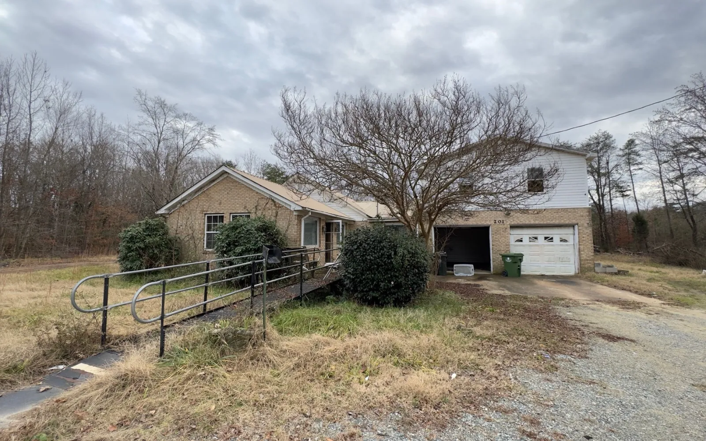

High Point NC home-selling options
Sell your High Point house as-is without repairing it first.
Yes, you can sell a High Point house in its current condition. America Home Buyers can review the repairs, cleanout, occupancy, and timing, then explain an as-is offer so you can compare it with the likely net from listing.
What a cash buyer can simplify.
A direct sale can reduce repair decisions, repeated showings, inspection negotiations, and buyer financing risk. That convenience has value, but it should be weighed against what the home might sell for after repairs and market exposure.
- Older systems or cosmetic issues.
- Estate properties.
- Rental homes with tenants or turnover repairs.
- Owners who want fewer steps before closing.
Start with the North Carolina as-is selling guide, then compare the numbers for your High Point property.

Searching for cash home buyers in High Point? Compare the written terms.
The advertised price is only part of the decision. Ask each buyer to explain how the purchase will be funded, what could change the price, and what must happen before closing. A promise of a fast sale is not the same as a confirmed closing date.
- Money you would receive: Compare the offer after seller-paid costs and verified mortgage or lien payoffs. Ask who pays each closing cost.
- Repairs and belongings: Identify what the buyer accepts as-is and what, if anything, you would need to remove. See the guide to selling with belongings left behind.
- Certainty: Ask for proof of available funds and an explanation of financing, inspection, assignment, and cancellation terms.
- Timing: Confirm access, title work, occupancy, and the closing schedule before making moving or cleanout plans.
Use the buyer comparison checklist and our offer calculation guide to prepare questions. Have your own closing attorney explain contract terms you do not understand.
High Point and nearby Triad communities
Condition, access, and timing shape the right selling path.
A High Point property may be ready for a traditional listing, or it may need roof, HVAC, flooring, cleanout, tenant coordination, or other work first. We review the complete situation instead of assuming every owner should make the same choice.
If listing appears likely to produce a better result after costs and preparation, compare that path. If the repairs and uncertainty are the real problem, compare an as-is offer.
The property address, known repairs, occupancy status, access details, and the timeline you would prefer. You do not need contractor estimates before calling.
Request a High Point property review.
Phone and street address are required. Email and name are optional. Submitting the form does not obligate you to sell.
Can I sell my High Point house as-is without cleaning it out?
Yes. Tell us which repairs and belongings need to remain so they can be considered in the property review and written agreement.
How fast can I sell a house in High Point?
Timing depends on title work, access, payoff information, and the written agreement. We will discuss a realistic closing window after reviewing the property.
How is the offer calculated?
We consider likely resale value, repairs, cleanout, holding and selling costs, and risk. See the full explanation.
How do I compare buyers?
Ask about proof of funds, inspections, assignments, costs, and cancellation terms. Use our cash buyer checklist.
Compare cash buyers using the same property information
For a High Point property, give each buyer the same description of repairs, occupancy and items that will remain. Comparing an unconditional-sounding headline price with a fully explained written offer can be misleading if inspection rights, assignment terms or fees differ.
Ask who will purchase the house, what due diligence remains, and which expenses would come out of your proceeds. Keep a separate estimate of repairs and holding costs for the listing option so the comparison is useful.
Explore inherited property, houses needing repairs, tenant-occupied homes or liens and back taxes. Request a property review.
Washington Street and High Point’s historic neighborhoods
High Point’s preservation program identifies Washington Street, West High Street, Johnson Street and Sherrod Park as local historic districts. For a property in or near one of these areas, confirm the actual boundary and designation instead of assuming every nearby house has the same rules. Ask a buyer how property condition, permitted work and comparable sold homes affect the offer.
Official local resource: High Point Historic Preservation Commission. Reviewed November 10, 2026.